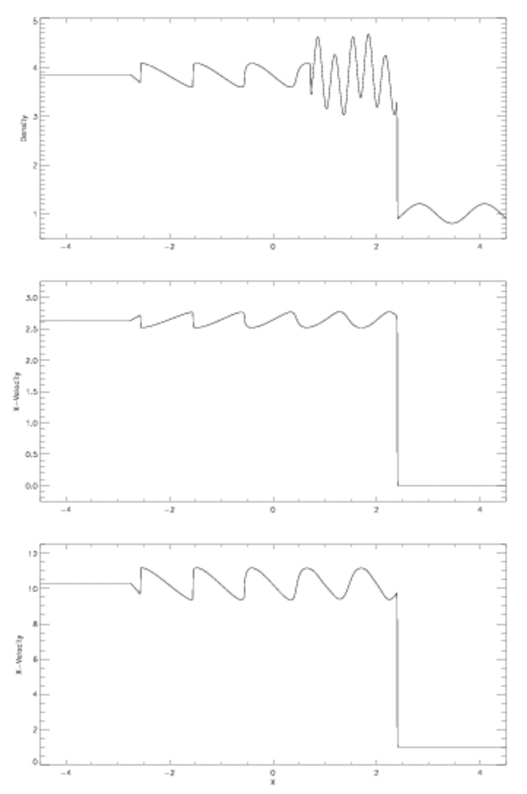
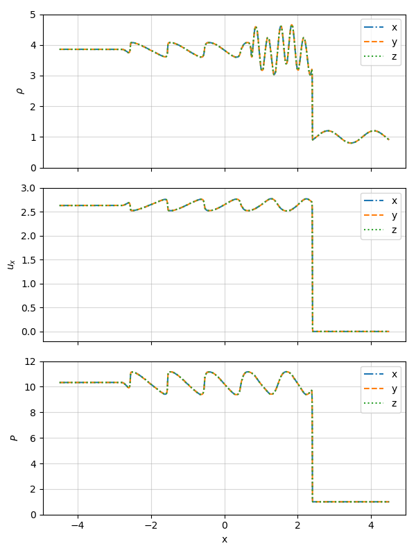
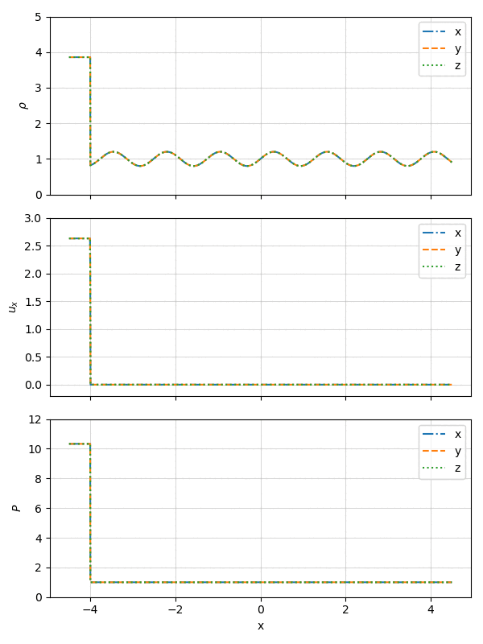
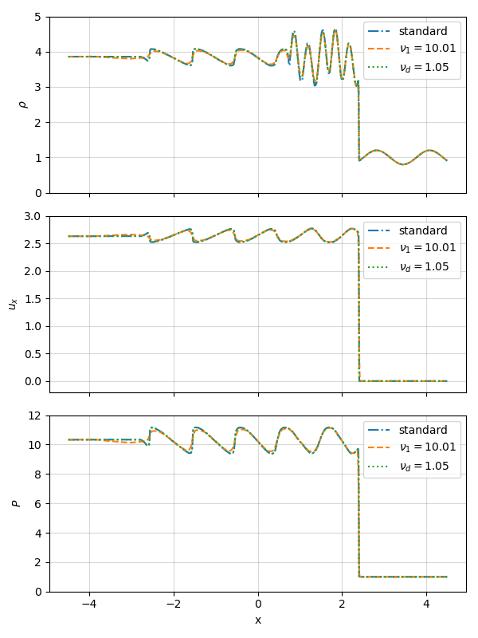
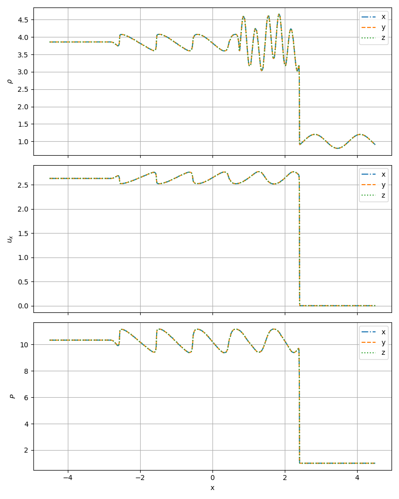
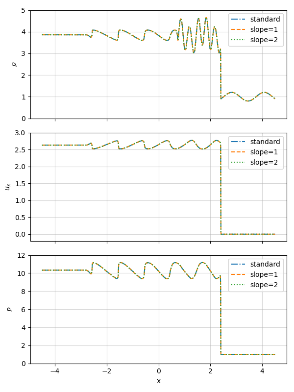

Current branch: develop-bc
Current commit: 164f010Shu Osher test
We will be comparing our solvers' solutions to the Shu-Osher test with the plots provided by the University of Rochester in their report on hydrodynamics test problems. AS a reference, they provided these figures of the density, x-velocity and pressure in the x-direction.

The Shu-Osher test uses the initial values:
| $$\rho$$ | $$v_x$$ | $$v_y$$ | $$v_z$$ | $$P$$ | $$B_x$$ | $$B_z$$ | |
|---|---|---|---|---|---|---|---|
| Left side | 3.857143 | 2.629369 | 0 | 0 | 10.3333 | ... | ... |
| Right side | $$1+0.2 \sin(5\pi x)$$ | 0 | 0 | 0 | 1 | ... | ... |
Bifrost
Reproducing the test using our Bifrost solver with standard configuration (and simultaneously testing the x-, y- and z-directions) yields the result: 
Here we have used $t = 1.8$ s as the end time of the simulation. We can see that our Bifrost solution of the Shu-Osher test replicates the reference figure very accurately.
The time evolution of the Shu-Osher test in the x-, y- and z-directions very nicely shows us the shock wave travelling along the x-axis:

The initial configuration for the Bifrost solver is:
| Parameter | $\nu_1$ | $\nu_2$ | $\nu_3$ | $\nu_d$ | $\nu_{ee}$ | $\eta_3$ |
|---|---|---|---|---|---|---|
| Value | 0.01 | 0.3 | 0.1 | 0.05 | 0.5 | 0.3 |
By changing these parameters, we can fine-tune the solution and see if it fits the reference figure even better. We begin by changing the parameters such that $\nu_1=10.01$ and $\nu_{ee} = 1.05$, because changing either parameter any less yelds an unnoticable result. The plots are shown below:

We can see that the curve for $\nu_1 = 10.01$ deviates the most from the reference figure, in which the "turns" on the wavelike shapes are very sharp. By increasing $\nu_1$ a lot, these sharp angles soften out.
Ramses HLLD solver
We can compare our Bifrost solution with the figure we get when we run the Ramses HLLD solver instead, using the default slope parameter set to $3.5$. In the x-, y- and z-directions, this yields:

Just like we saw with the Bifrost solver, Ramses is also able to reproduce the reference figure very accurately. By changing the slope parameter to $1$ and $2$ respectively, we can see if we are able to fine-tune it even further. The results are plotted below:

It is apparent that changing the slope parameter does not change the solution in any noticeable way, at least when we are only looking at the final time step.